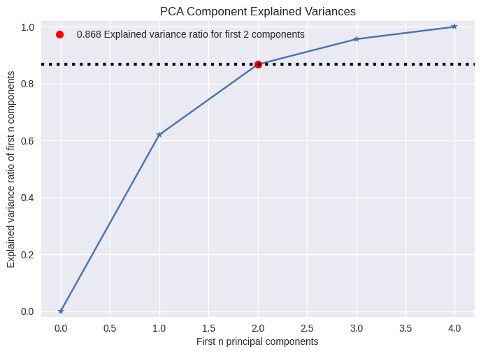
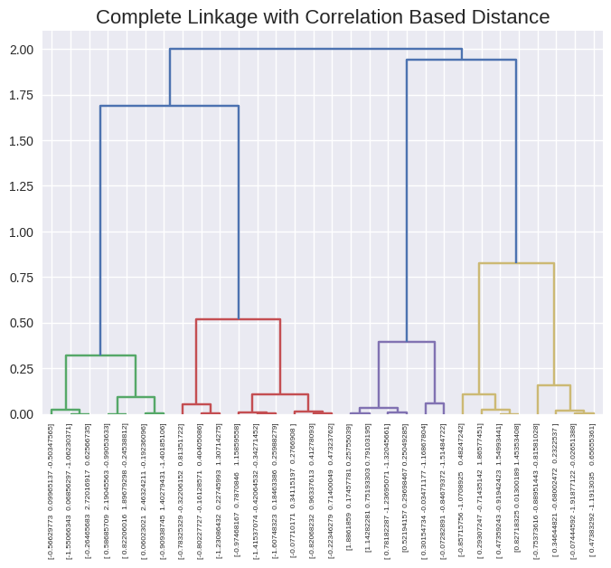
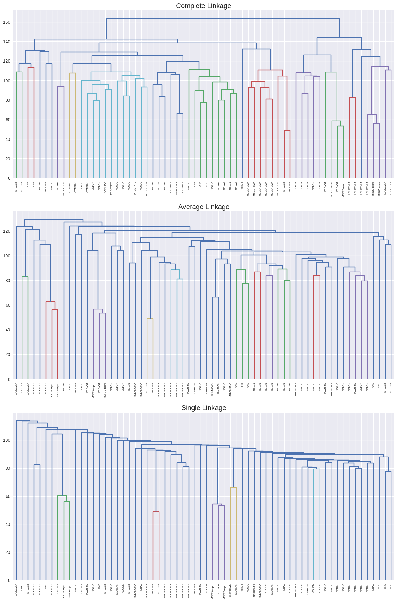
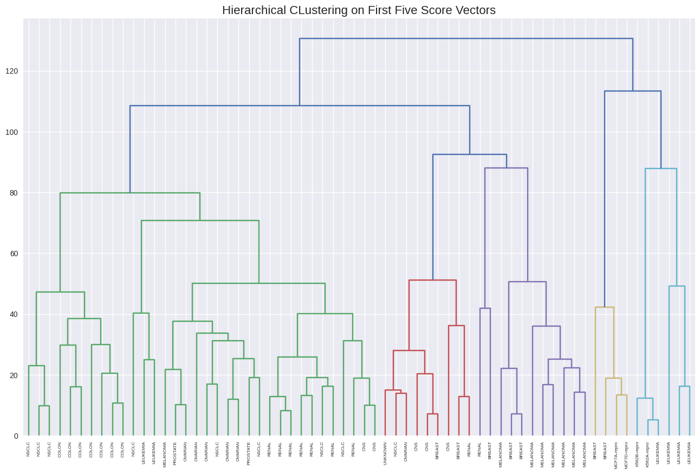

Lab 12.5: Unsupervised Learning
Contents
Lab 12.5: Unsupervised Learning#
12.5.1: Principcal Component Analysis#
# imports and setup
%matplotlib inline
import numpy as np
import pandas as pd
import matplotlib.pyplot as plt
pd.set_option('display.max_rows', 12)
pd.set_option('display.max_columns', 12)
pd.set_option('display.float_format', '{:20,.4f}'.format) # get rid of scientific notation
plt.style.use('seaborn') # pretty matplotlib plots
usarrests = pd.read_csv('../datasets/USArrests.csv', index_col=0)
usarrests.mean()
Murder 7.7880
Assault 170.7600
UrbanPop 65.5400
Rape 21.2320
dtype: float64
usarrests.var()
Murder 18.9705
Assault 6,945.1657
UrbanPop 209.5188
Rape 87.7292
dtype: float64
from sklearn.pipeline import Pipeline
from sklearn.decomposition import PCA
from sklearn.preprocessing import StandardScaler
# using pipeline
# steps = [('scaler', StandardScaler()),
# ('pca', PCA())]
# model = Pipeline(steps)
# model.fit(usarrests)
# without pipeline
scaler = StandardScaler()
usarrests_scaled = scaler.fit_transform(usarrests)
pca = PCA()
pca.fit(usarrests_scaled)
PCA()In a Jupyter environment, please rerun this cell to show the HTML representation or trust the notebook.
On GitHub, the HTML representation is unable to render, please try loading this page with nbviewer.org.
PCA()
scaler.mean_
array([ 7.788, 170.76 , 65.54 , 21.232])
scaler.scale_
array([ 4.31173469, 82.50007515, 14.3292847 , 9.27224762])
# rotation matrix
pd.DataFrame(pca.components_.T,
index=usarrests.columns,
columns=['PC' + str(i+1) for i in range(len(pca.components_))])
| PC1 | PC2 | PC3 | PC4 | |
|---|---|---|---|---|
| Murder | 0.5359 | 0.4182 | -0.3412 | 0.6492 |
| Assault | 0.5832 | 0.1880 | -0.2681 | -0.7434 |
| UrbanPop | 0.2782 | -0.8728 | -0.3780 | 0.1339 |
| Rape | 0.5434 | -0.1673 | 0.8178 | 0.0890 |
# 0,1 denote PC1 and PC2; change values for other PCs
xvector = pca.components_[0] # see 'prcomp(my_data)$rotation' in R
yvector = -pca.components_[1]
xs = pca.transform(usarrests_scaled)[:,0] # see 'prcomp(my_data)$x' in R
ys = -pca.transform(usarrests_scaled)[:,1]
## visualize projections
plt.figure(figsize=(8, 8))
for i in range(len(xvector)):
# arrows project features (ie columns from csv) as vectors onto PC axes
plt.arrow(0, 0, xvector[i]*max(xs), yvector[i]*max(ys),
color='r', width=0.005, head_width=0.1)
plt.text(xvector[i]*max(xs)*1.1, yvector[i]*max(ys)*1.1,
usarrests.columns[i], color='r', size=14)
for i in range(len(xs)):
# circles project documents (ie rows from csv) as points onto PC axes
# plt.plot(xs[i], ys[i], 'bo')
plt.text(xs[i], ys[i], usarrests.index[i], color='black', alpha=0.4)
plt.title('Biplot PC1 & PC2', size=16)
plt.xlabel('1st Principal Component')
plt.ylabel('2nd Principal Component')
m = 0.5
plt.xlim(min(xs) - m, max(xs) + m)
plt.ylim(min(ys) - m, max(ys) + m);
pca.explained_variance_, pca.explained_variance_ratio_
(array([2.53085875, 1.00996444, 0.36383998, 0.17696948]),
array([0.62006039, 0.24744129, 0.0891408 , 0.04335752]))
from scikitplot.decomposition import plot_pca_component_variance
plot_pca_component_variance(pca, target_explained_variance=0.8);

12.5.2 Matrix Completion#
12.5.3 Clustering#
K-Means Clustering#
np.random.seed(42)
x = np.random.normal(size=50*2).reshape(50, 2)
x[0:25, 0] += 3
x[25:50, 1] -= 4
from sklearn.cluster import KMeans
kmeans = KMeans(n_clusters=2, random_state=42, n_init=20)
kmeans.fit(x)
KMeans(n_clusters=2, n_init=20, random_state=42)In a Jupyter environment, please rerun this cell to show the HTML representation or trust the notebook.
On GitHub, the HTML representation is unable to render, please try loading this page with nbviewer.org.
KMeans(n_clusters=2, n_init=20, random_state=42)
kmeans.labels_
array([1, 1, 1, 1, 1, 1, 1, 1, 1, 1, 1, 1, 1, 1, 1, 1, 1, 1, 1, 1, 1, 1,
1, 1, 1, 0, 0, 0, 0, 0, 0, 0, 0, 0, 0, 0, 0, 0, 0, 0, 0, 0, 0, 0,
0, 0, 0, 0, 0, 0], dtype=int32)
plt.scatter(x[:, 0], x[:, 1], c=kmeans.labels_, cmap='Spectral')
plt.title('K-Means Clustering with K=2', size=16);
kmeans2 = KMeans(n_clusters=3, random_state=42, n_init=20)
kmeans2.fit(x)
KMeans(n_clusters=3, n_init=20, random_state=42)In a Jupyter environment, please rerun this cell to show the HTML representation or trust the notebook.
On GitHub, the HTML representation is unable to render, please try loading this page with nbviewer.org.
KMeans(n_clusters=3, n_init=20, random_state=42)
kmeans2.cluster_centers_
array([[ 2.60450418, 0.24696837],
[-0.09155989, -3.87287837],
[ 3.27858059, -1.37217166]])
kmeans2.labels_
array([0, 0, 0, 0, 0, 0, 2, 0, 0, 2, 2, 2, 0, 0, 0, 0, 2, 2, 2, 0, 0, 0,
0, 0, 2, 1, 1, 1, 1, 1, 1, 1, 1, 1, 1, 1, 1, 1, 1, 1, 1, 1, 1, 1,
1, 1, 1, 1, 1, 1], dtype=int32)
kmeans3 = KMeans(n_clusters=3, random_state=42, n_init=1)
kmeans3.fit(x)
kmeans4 = KMeans(n_clusters=3, random_state=42, n_init=20)
kmeans4.fit(x)
print('inertia with n_init=1:', kmeans3.inertia_)
print('inertia with n_init=20:', kmeans4.inertia_)
inertia with n_init=1: 63.37564083318655
inertia with n_init=20: 62.73737809735573
Hierarchical Clustering#
from scipy.cluster.hierarchy import linkage, dendrogram
hc_complete = linkage(x, method='complete')
hc_average = linkage(x, method='average')
hc_single = linkage(x, method='single')
f, axes = plt.subplots(1, 3, sharex=False, sharey=False)
f.set_figheight(8)
f.set_figwidth(16)
dendrogram(hc_complete,
labels=x,
leaf_rotation=90,
leaf_font_size=6,
ax=axes[0])
dendrogram(hc_average,
labels=x,
leaf_rotation=90,
leaf_font_size=6,
ax=axes[1])
dendrogram(hc_single,
labels=x,
leaf_rotation=90,
leaf_font_size=6,
ax=axes[2])
axes[0].set_title('Complete Linkage', size=16)
axes[1].set_title('Average Linkage', size=16)
axes[2].set_title('Single Linkage', size=16);
/opt/hostedtoolcache/Python/3.8.13/x64/lib/python3.8/site-packages/matplotlib/text.py:1223: FutureWarning: elementwise comparison failed; returning scalar instead, but in the future will perform elementwise comparison
if s != self._text:
from scipy.cluster.hierarchy import fcluster, cut_tree
cut_tree(hc_complete, 2).ravel()
array([0, 0, 0, 0, 0, 0, 0, 0, 0, 0, 0, 0, 0, 0, 0, 0, 0, 0, 0, 0, 0, 0,
0, 0, 0, 1, 1, 1, 1, 1, 1, 1, 1, 1, 1, 1, 1, 1, 1, 1, 1, 1, 1, 1,
1, 1, 1, 1, 1, 1])
cut_tree(hc_average, 2).ravel()
array([0, 0, 0, 0, 0, 0, 0, 0, 0, 0, 0, 0, 0, 0, 0, 0, 0, 0, 0, 0, 0, 0,
0, 0, 0, 1, 1, 1, 1, 1, 1, 1, 1, 1, 1, 1, 1, 1, 1, 1, 1, 1, 1, 1,
1, 1, 1, 1, 1, 1])
cut_tree(hc_single, 2).ravel()
array([0, 0, 0, 0, 0, 0, 0, 0, 0, 0, 0, 0, 0, 0, 0, 0, 0, 0, 0, 0, 0, 0,
0, 0, 0, 0, 0, 0, 0, 0, 0, 0, 0, 0, 0, 0, 0, 1, 0, 0, 0, 0, 0, 0,
0, 0, 0, 0, 0, 0])
cut_tree(hc_single, 4).ravel()
array([0, 1, 0, 0, 0, 0, 0, 0, 0, 0, 0, 0, 0, 0, 0, 0, 0, 0, 0, 0, 0, 0,
0, 0, 0, 2, 2, 2, 2, 2, 2, 2, 2, 2, 2, 2, 2, 3, 2, 2, 2, 2, 2, 2,
2, 2, 2, 2, 2, 2])
from sklearn.preprocessing import StandardScaler
scaler = StandardScaler()
x_scaled = scaler.fit_transform(x)
dendrogram(linkage(x_scaled, method='complete'),
labels=x_scaled,
leaf_rotation=90,
leaf_font_size=6)
plt.title('Hierarchical Clustering with Scaled Features', size=16);
/opt/hostedtoolcache/Python/3.8.13/x64/lib/python3.8/site-packages/matplotlib/text.py:1223: FutureWarning: elementwise comparison failed; returning scalar instead, but in the future will perform elementwise comparison
if s != self._text:
x = np.random.normal(size=30*3).reshape(30, 3)
# scipy linkage takes care of the distance function pdist
dendrogram(linkage(x, method='complete', metric='correlation'),
labels=x,
leaf_rotation=90,
leaf_font_size=6)
plt.title('Complete Linkage with Correlation Based Distance', size=16);

12.5.4: NCI60 Data Example#
nci60 = pd.read_csv('../datasets/NCI60.csv', index_col=0)
nci_labs = nci60.labs
nci_data = nci60.drop('labs', axis=1)
nci_data.head()
| data.1 | data.2 | data.3 | data.4 | data.5 | data.6 | ... | data.6825 | data.6826 | data.6827 | data.6828 | data.6829 | data.6830 | |
|---|---|---|---|---|---|---|---|---|---|---|---|---|---|
| V1 | 0.3000 | 1.1800 | 0.5500 | 1.1400 | -0.2650 | -0.0700 | ... | 0.6300 | -0.0300 | 0.0000 | 0.2800 | -0.3400 | -1.9300 |
| V2 | 0.6800 | 1.2900 | 0.1700 | 0.3800 | 0.4650 | 0.5800 | ... | 0.1099 | -0.8600 | -1.2500 | -0.7700 | -0.3900 | -2.0000 |
| V3 | 0.9400 | -0.0400 | -0.1700 | -0.0400 | -0.6050 | 0.0000 | ... | -0.2700 | -0.1500 | 0.0000 | -0.1200 | -0.4100 | 0.0000 |
| V4 | 0.2800 | -0.3100 | 0.6800 | -0.8100 | 0.6250 | -0.0000 | ... | -0.3500 | -0.3000 | -1.1500 | 1.0900 | -0.2600 | -1.1000 |
| V5 | 0.4850 | -0.4650 | 0.3950 | 0.9050 | 0.2000 | -0.0050 | ... | 0.6350 | 0.6050 | 0.0000 | 0.7450 | 0.4250 | 0.1450 |
5 rows × 6830 columns
nci_labs.head()
V1 CNS
V2 CNS
V3 CNS
V4 RENAL
V5 BREAST
Name: labs, dtype: object
nci_labs.value_counts()
RENAL 9
NSCLC 9
MELANOMA 8
BREAST 7
COLON 7
..
UNKNOWN 1
K562B-repro 1
K562A-repro 1
MCF7A-repro 1
MCF7D-repro 1
Name: labs, Length: 14, dtype: int64
PCA on the NCI60 Data#
from sklearn.decomposition import PCA
from sklearn.preprocessing import StandardScaler
scaler = StandardScaler()
nci_scaled = scaler.fit_transform(nci_data)
pca = PCA()
pca.fit(nci_scaled)
PCA()In a Jupyter environment, please rerun this cell to show the HTML representation or trust the notebook.
On GitHub, the HTML representation is unable to render, please try loading this page with nbviewer.org.
PCA()
x = pca.transform(nci_scaled)
from sklearn.preprocessing import LabelEncoder
le = LabelEncoder()
color_index = le.fit_transform(nci_labs)
f, axes = plt.subplots(1, 2, sharex=False, sharey=False)
f.set_figheight(8)
f.set_figwidth(16)
axes[0].scatter(x[:, 0], -x[:, 1], c=color_index, cmap='Spectral')
axes[0].set_xlabel('Z1')
axes[0].set_ylabel('Z2')
axes[1].scatter(x[:, 0], x[:, 2], c=color_index, cmap='Spectral')
axes[1].set_xlabel('Z1')
axes[1].set_ylabel('Z3');
pca.explained_variance_ratio_[:5]
array([0.11358942, 0.06756203, 0.05751842, 0.04247554, 0.03734972])
pca.explained_variance_ratio_.cumsum()[:5]
array([0.11358942, 0.18115144, 0.23866987, 0.28114541, 0.31849513])
from scikitplot.decomposition import plot_pca_component_variance
f, axes = plt.subplots(1, 2, sharex=False, sharey=False)
f.set_figheight(6)
f.set_figwidth(14)
axes[0].plot(pca.explained_variance_ratio_, marker='o', markeredgewidth=1, markerfacecolor='None')
axes[0].set_title('PVE')
plot_pca_component_variance(pca, ax=axes[1]);
Clustering the Observations of the NCI60 Data#
from scipy.cluster.hierarchy import dendrogram, linkage, cut_tree
f, axes = plt.subplots(3, 1, sharex=False, sharey=False)
f.set_figheight(24)
f.set_figwidth(16)
dendrogram(linkage(nci_scaled, method='complete'),
labels=nci_labs,
leaf_rotation=90,
leaf_font_size=6,
ax=axes[0])
dendrogram(linkage(nci_scaled, method='average'),
labels=nci_labs,
leaf_rotation=90,
leaf_font_size=6,
ax=axes[1])
dendrogram(linkage(nci_scaled, method='single'),
labels=nci_labs,
leaf_rotation=90,
leaf_font_size=6,
ax=axes[2])
axes[0].set_title('Complete Linkage', size=16)
axes[1].set_title('Average Linkage', size=16)
axes[2].set_title('Single Linkage', size=16);

hc_clusters = cut_tree(linkage(nci_scaled, method='complete'), 4).ravel()
pd.crosstab(hc_clusters, nci_labs)
| labs | BREAST | CNS | COLON | K562A-repro | K562B-repro | LEUKEMIA | ... | MELANOMA | NSCLC | OVARIAN | PROSTATE | RENAL | UNKNOWN |
|---|---|---|---|---|---|---|---|---|---|---|---|---|---|
| row_0 | |||||||||||||
| 0 | 2 | 3 | 2 | 0 | 0 | 0 | ... | 8 | 8 | 6 | 2 | 8 | 1 |
| 1 | 3 | 2 | 0 | 0 | 0 | 0 | ... | 0 | 1 | 0 | 0 | 1 | 0 |
| 2 | 0 | 0 | 0 | 1 | 1 | 6 | ... | 0 | 0 | 0 | 0 | 0 | 0 |
| 3 | 2 | 0 | 5 | 0 | 0 | 0 | ... | 0 | 0 | 0 | 0 | 0 | 0 |
4 rows × 14 columns
plt.figure(figsize=(16, 10))
dendrogram(linkage(nci_scaled, method='complete'),
labels=nci_labs,
leaf_rotation=90,
leaf_font_size=6)
plt.axhline(y=139, c='r')
plt.title('Complete Linkage', size=16);
from sklearn.cluster import KMeans
km = KMeans(n_clusters=4, n_init=20, random_state=42)
km.fit(nci_scaled)
pd.crosstab(km.labels_, hc_clusters)
| col_0 | 0 | 1 | 2 | 3 |
|---|---|---|---|---|
| row_0 | ||||
| 0 | 9 | 0 | 0 | 0 |
| 1 | 9 | 0 | 0 | 8 |
| 2 | 22 | 7 | 0 | 0 |
| 3 | 0 | 0 | 8 | 1 |
hc2 = linkage(x[:, 0:5], method='complete')
plt.figure(figsize=(16, 10))
dendrogram(hc2,
labels=nci_labs,
leaf_rotation=90,
leaf_font_size=6)
plt.title('Hierarchical CLustering on First Five Score Vectors', size=16);

pd.crosstab(cut_tree(hc2, 4).ravel(), nci_labs)
| labs | BREAST | CNS | COLON | K562A-repro | K562B-repro | LEUKEMIA | ... | MELANOMA | NSCLC | OVARIAN | PROSTATE | RENAL | UNKNOWN |
|---|---|---|---|---|---|---|---|---|---|---|---|---|---|
| row_0 | |||||||||||||
| 0 | 0 | 2 | 7 | 0 | 0 | 2 | ... | 1 | 8 | 5 | 2 | 7 | 0 |
| 1 | 5 | 3 | 0 | 0 | 0 | 0 | ... | 7 | 1 | 1 | 0 | 2 | 1 |
| 2 | 0 | 0 | 0 | 1 | 1 | 4 | ... | 0 | 0 | 0 | 0 | 0 | 0 |
| 3 | 2 | 0 | 0 | 0 | 0 | 0 | ... | 0 | 0 | 0 | 0 | 0 | 0 |
4 rows × 14 columns